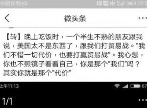

元键政5：我们是谁，应该为谁说话？ - Meta Political Discussion 5：Who Are We, and Whom Should We Speak For?
有一个段子，说的是：晚上吃饭时，一个半生不熟的朋友跟我说，美国太不是东西了，跟我们打贸易战。“我们不惜一切代价，也要打赢贸易战”。我心想，你也不照镜子看看自己，你是那个“我们”吗？其实你就是那个“代价”。
There is a joke that goes like this: While having dinner one evening, an acquaintance who I barely know said to me, "America is such a jerk, starting a trade war with us. 'We will spare no cost to win this trade war.'" I thought to myself: have you even looked in the mirror? Are you part of that "we"? You're probably just part of the "cost".

段子当然是有些夸张。但是，不知道大家看完之后是否想过同样的问题：我们什么时候是“我们”，什么时候是“代价”？再进一步问，我们是谁，应该为谁说话？用通俗的话说就是：人的屁股和脑袋应该在哪里？
The joke is somewhat exaggerated. But after reading it, has anyone thought about this question: when are we the "we" and when are we the "cost"? Furthermore, who are we, and whom should we speak for?
“我们是谁” 相对好回答，它问的是身份问题。它的答案可能是民族身份，国家（包括区域，市县）身份，阶级身份，性别身份，宗教身份，兴趣身份，职业身份，思想身份（左派/右派）等等。此外，人的身份问题往往是复杂的，比如，马前卒同时是中国人，河北人，媒体人，男性，满族，无神论者，左派，政治爱好者。
"Who are we" is relatively easier to answer, as it addresses the issue of identity. The answer might involve ethnic identity, national (including regional, city, county) identity, class identity, gender identity, religious identity, interest-based identity, professional identity, ideological identity (left-wing/right-wing), and so on. Moreover, a person's identity is often complex. For instance, Ma Qianzu(马前卒) can simultaneously be Chinese, from Hebei, a media person, male, Manchu, an atheist, a leftist, and a political enthusiast.
而“应该为谁说话”，这个问题比较复杂。在键政中，人说话的主要目的是为了捍卫自己的政治立场。决定人的政治立场的可能是其民族，国家，阶级，性别身份，但也可能是他自己的政治理论。
As for "whom should we speak for," this question is more complex. In political discourse, the main purpose of speaking is often to defend one's political stance. A person's political stance may be determined by their ethnicity, nationality, class, gender identity, or their own political theory.
人固然会本能地为自己的身份说话，比如，争取民族独立的人往往是本民族的人，争取女性权益的人也往往是女性。但是，人也会因为自己的政治理论而热爱某一团体，为其说话。恩格斯怎么说都是资产阶级，工厂主的儿子，但他却是马克思主义的奠基人。林毅夫为台湾人，但毅然“叛逃”到大陆担任经济学者。屁股不一定决定脑袋，认为“脑袋只会被屁股决定”是一种懒惰的思维方式。
People naturally tend to speak for their own identity. For example, those fighting for national independence are often from that nation, and those advocating for women's rights are often women. However, individuals may also champion a group because of their political beliefs. Engels, for instance, was undeniably part of the bourgeoisie and the son of a factory owner, yet he was a founding figure of Marxism. Lin Yifu was Taiwanese but resolutely "defected" to the mainland to serve as an economist. Loyalties do not necessarily dictate beliefs; thinking that "beliefs are solely determined by loyalties" is a lazy mindset.
所有的身份认同，和所有的立场，只要是出于理性，就没有高下之分。然而有时，政府，或家族族长，或网络上的意见领袖等人，可能会出于政治宣传，而强调某一种身份或某一种立场超出其他的身份和立场（包括强化阶级叙事，讲好中国故事，美国梦，等等）。理性人们要认清这一点。
All forms of identity and all stances, as long as they are based on rationality, have no inherent hierarchy. However, sometimes governments, family patriarchs, online opinion leaders, and others may emphasize one identity or stance over others for political propaganda (such as reinforcing class narratives, promoting the "China story," or the "American dream"). As rational individuals, we need to recognize this.
最后，考虑这样一个优生学问题：在没有遗传诊断的年代，是否要给遗传病人，智障等人强制绝育，以减少对国家和家庭的财政压力？
Finally, consider the eugenics issue of whether people with genetic disorders or intellectual disabilities should be forcibly sterilized to reduce financial burdens on the state and families in the era before genetic diagnosis.
这个问题在上个世纪是一个相当有争议的问题。从国家和家庭的立场来看，国家的医疗资源相当有限，并且社会上的家庭普遍不富裕，照顾一个遗传病人或智障是相当大的负担。而强制绝育可以减少这种长期的经济负担。但从患者的角度来看，这是对人权的侵犯，没有人能剥夺其他人生育的权利。从国家的角度考虑问题的人，和从个人角度考虑问题的人，对这个问题往往会有不同的看法。
This was a highly controversial topic in the last century. From the perspective of the state and families, medical resources were quite limited, and most families were not wealthy, making the care of someone with a genetic disorder or intellectual disability a significant burden. Forced sterilization could potentially reduce this long-term economic strain. However, from the patient's perspective, this is a violation of human rights, as no one has the right to strip others of their reproductive rights. People who approach this issue from the perspective of the state often have a different view than those who consider it from an individual rights standpoint.